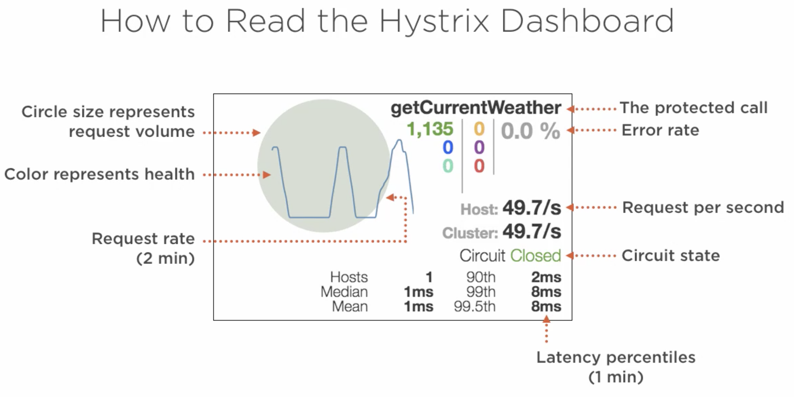
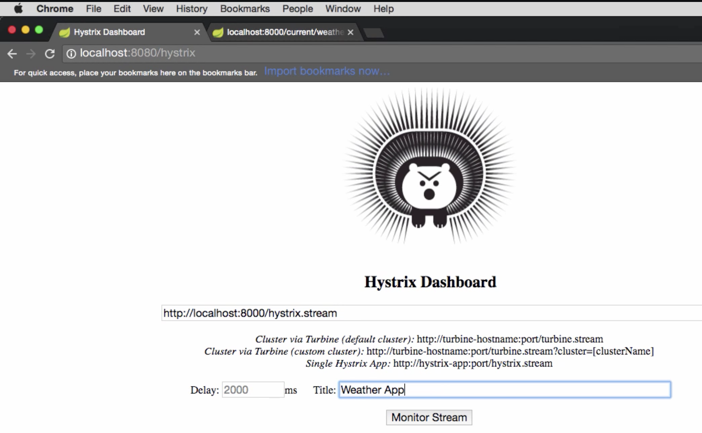

Self Healing Services#
Covers:
Fault Tolerance
Self-healing
Failures in Distributed Systems#
“Failures are Inevitable”
Few areas where failures can occur
hardware fails
software fails
network fails
Chance of failure becomes “multiplied” in Distributed systems
Cascading Failures#
“… a failure in a system of interconnected parts in which a failure of a part can trigger the failure of successive parts” - Wikipedia
Multiple issues due to cascading failures:
fault tolerance problem
resource overloading problem
Solutions:
Learn to embrace failures:
Tolerate failures
Gracefully degrade : examples are, empty/null/dummy response instead of failure.
Limit resource consumed
Constrain usage : put limited resources and not allowing requests stacking up.
Circuit Breaker Pattern#
“… a design pattern in modern software development used to detect failures and encapsulates logic of preventing a failure to reoccur constantly …” - Wikipedia
Netflix Hystrix#
Hystrix is a latency and fault tolerance library designed to stop cascading failure and enable resilience in complex distributed systems where failure is inevitable.
Implements the circuit breaker pattern:
Wraps calls and watches for failures
10 sec rolling window : Detects failures within a “10 sec rolling window”
20 request volume : Request should be at least 20 requests
>= 50% error rate : Circuit tripped when >= 50% are errors in a rolling window
Waits & tries a single request after 5 sec : Waits and tries a single request every 5 sec and determines whether to close the circuit
Fallbacks : Short-circuited, timed-out, rejected or failed requests results in “fallbacks”
Protects services from being overloaded:
Thread pools, semaphores, & cascading failures : If no resource is available (in threadpool) all the subsequent requests fail immediately with a fallback
Using Spring cloud + Netflix Hystrix#
Application.java
@SpringBootApplication
@EnableCircuitBreaker // <----
public class Application {
public static void main(String args...) {
SpringApplication.run(Application.class, args);
}
}
Service.java
@Service
public class Service {
@HystrixCommand(fallbackMethod = "somethingElse")
public void doSomething() {
// ...
}
public void somethingElse() {
// ...
}
}
NOTEs:
If you want hystrix metric as well, add spring-boot-actuator dependency as well.
Be careful with Hystrix timeouts:
Ensure timeouts encompass caller timeouts plus any retries
Default:
1000mshystrix.command.default.execution.isolation.thread.timeoutInMilliseconds=<timeout_ms>
Hystrix Dashboard#
Tracks metrics such as:
Circuit state
Error rate
Traffic volume
Successful requests
Rejected requests
Timeouts
Latency percentiles
Monitor protected calls:
Single server or cluster
To use is, just add a dependency and add an annotation:
@SpringBootApplication
@EnableHystrixDashboard // <----
public class Application {
public static void main(String args...) {
SpringApplication.run(Application.class, args);
}
}
Reading Hystrix Dashboard#


Start a standalone hystrix server (just like standalone discovery server)
Put a server’s /
hystrix.streamendpointGive a name
Netflix Turbine#
“Turbine is a tool for aggregating streams of Server-Sent Event (SSE) JSON data into a single stream…”
Why?
Hystrix stream is for a service
To track multiple services, we need to open multiple dashboards and track them independently.
Using Spring cloud + Netflix Turbine#
Application.java
@SpringBootApplication
@EnableTurbine
public class Application {
public static void main(String args...) {
SpringApplication.run(Application.class, args);
}
}
application.properties
turbine.app-configs=<list_of_service_ids>
turbine.cluster-name-expression='default'
OR application.yml
turbine:
appConfig: <list_of_service_ids>
clusterNameExpression: "'default'"